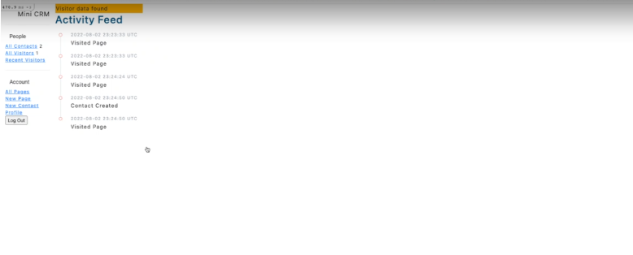

// Side project, featured
Mini CRM

// About
A micro CRM with a marketing identity feature. It links a visitor's movements across platforms into one view of the user journey.
// Stack
// GitHub Links
Github// Video Walkthrough
Watch VideoProject Details

I wanted to build a Ruby on Rails app with MVC architecture and data modeling.
Web Stack and Explanation
Built with Ruby on Rails. Related data is managed through nested forms and RESTful routes, on a typical content management system domain model.
Problems and Thought Process
When a contact visited a page, their activity feed persisted in development but came up empty in production. The cause was the Ahoy gem. The next version would swap Ahoy for another tracking gem.